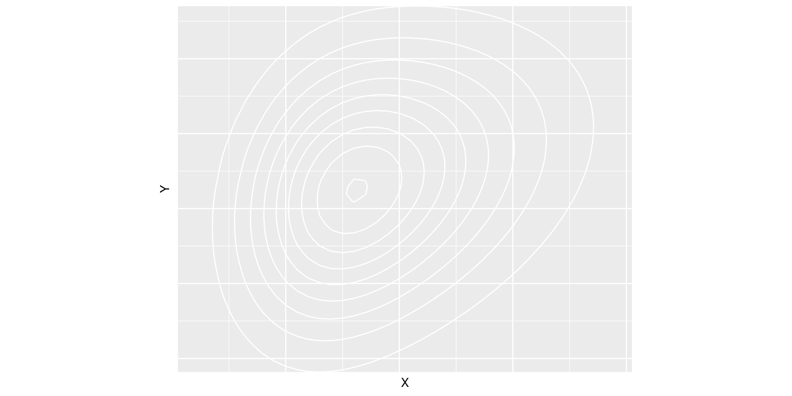
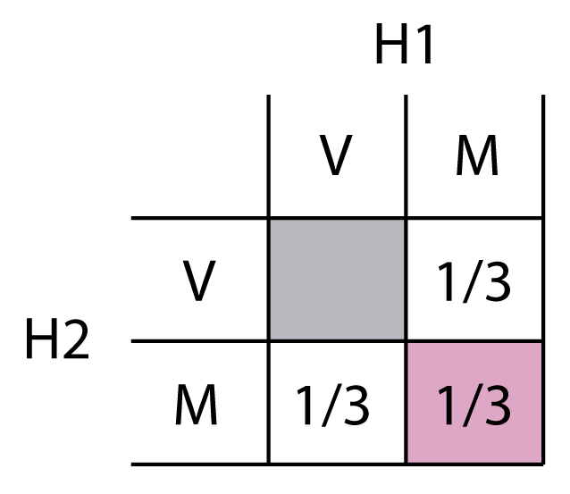
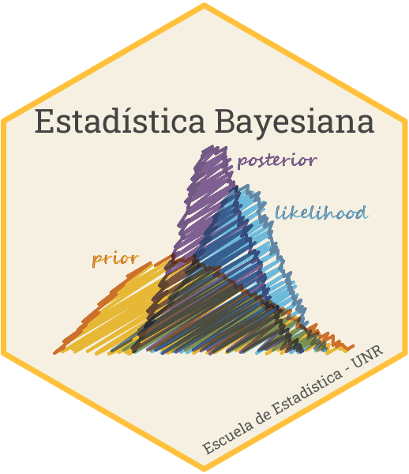

\[A \Rightarrow B\] \(A\) es verdadero, por lo tanto \(B\) es verdadero
\(B\) es falso, por lo tanto \(A\) falso
\(A\): Tom es un gato
\(B\): Tom es un animal
\(B\) es verdadero, por lo tanto…
Pero este no es el tipo de razonamiento que utilizamos en la vida cotidiana:
\(A\): va a llover a las 10 de la mañana
\(B\): se nubla antes de las 10 de la mañana
\(B\) es verdadero, por lo tanto \(A\) se vuelve más plausible
En una noche oscura, un policía camina por una calle aparentemente desierta. De repente, se escucha la alarma de un local. Se da vuelta y ve, en la vereda de enfrente, una joyería con la vidriera rota. Un hombre con una máscara sale agachado a través del vidrio roto, con una bolsa llena de joyas caras. El policía no duda en concluir que el hombre no tiene buenas intenciones.
El razonamiento del policía no fue una deducción lógica, ya que podría existir una explicación alternativa para lo ocurrido.
Dada la evidencia, no podemos decir con seguridad que las intenciones del hombre no son buenas, pero sí que es extremadamente plausible que no lo sean.
El cerebro humano permanentemente determina si algo se vuelve más o menos plausible. Más aún, de alguna manera, evalúa el grado de plausibilidad de una proposición.
La plausibilidad de que llueva a las 10 de la mañana depende fuertemente de la oscuridad de las nubes a las 9:45.
Este razonamiento hace uso de nuestra experiencia previa. Combina información a priori con evidencia disponible. Esto da lugar a un proceso secuencial.
Páguese $1000 al portador de esta tarjeta si en este grupo hay alguien que tiene un loro como mascota
Páguese $1000 al portador de esta tarjeta si en este grupo nadie tiene un loro como mascota
Tienen a su disposición estas tarjetas. Podemos comprarlas o venderlas. Al final de la clase develamos el misterio y, quien tenga la tarjeta, cobra.
¿Por cuál pagarían más? ¿Cuánto estarían dispuestos a pagar como máximo?
Notar que el precio máximo que estarían dispuestos a pagar para comprarla es el precio mínimo por el que estarían dispuestos a venderla.
Todos pagaríamos \(p\cdot\$ 1000\) con \(0 \leq p \leq 1\).
Decidimos cuánto apostar en función de nuestra incertidumbre en la ocurrencia de un evento (de lo plausible que lo consideremos). Decidimos apostar \(p\cdot\$ 1000\) en favor de un evento, porque le asignamos una plausibilidad o credibilidad de grado \(p\).
Páguese $1000 al portador de esta tarjeta si el profe tiene una remera negra
¿Cuánto están dispuestos a pagar para tener esta tarjeta? ¿Por cuánto venderían la tarjeta si la tuvieran?
Páguese $1000 al portador de esta tarjeta si esta materia es la mejor del cuatrimestre
Páguese $1000 al portador de esta tarjeta si esta materia no es la mejor del cuatrimestre
Por la primera pagarían como máximo \(p\cdot\$ 1000\) y por la segunda, \(q\cdot\$ 1000\). Es necesario que \(p+q=1\). ¿Por qué?
Supongamos que \(p=0.7\) y \(q=0.5\). Eso significa que:
Supongamos que \(p=0.3\) y \(q=0.2\). Eso significa que:
Sabemos que a fin de cuatrimestre, quien tenga las dos tarjetas ganará \(\$1000\)…
Dutch book
Un Dutch book es un conjunto de apuestas que aseguran una pérdida. El argumento del Dutch book dice que una persona que tiene creencias inconsistentes actúa irracionalmente y puede ser llevado a una pérdida segura en un juego de apuestas
Los grados de plausibilidad o grados de creencia que una persona le asigna a un conjunto de eventos deben respetar los axiomas de probabilidad.
Se puede asignar un valor de probabilidad a cualquier proposición.
Las probabilidades son la mejor herramienta disponible para cuantificar la incertidumbre y las leyes de la probabilidad, la mejor herramienta para operar con ella.
Tres ideas de probabilidad
Todos los métodos estadísticos son subjetivos en el sentido que se basan en idealizaciones matemáticas de la realidad (modelos).
Distinguimos dos tipos de incertidumbre:
Lo retomaremos a lo largo del curso.
Consideremos la siguiente proposición:
Voy a aprobar todas las materias de este cuatrimestre (\(W\))
Una caja con 5 bolas azules y 5 bolas rojas. Se extrae una bola al azar. \(A\) es el evento extraer una bola azul
Si prefieren \(A_1\) entonces… 8 bolas azules y 2 bolas rojas. Se extrae una bola al azar. \(A\) es el evento extraer una bola azul.
Interludio…
¿Qué es más probable?
Los seres humanos no estamos optimizados para operar con probabilidades (al menos no intuitivamente).
Probabilidad de un evento \[\mathrm{Pr}(A)\] \[\mathrm{Pr}(\bar{A}) = 1-\mathrm{Pr}(A)\]
Probabilidad de la conjunción:
\[\mathrm{Pr}(A\wedge B) = \mathrm{Pr}(A,B)\] Si \(A\) y \(B\) son independientes, entonces
\[\mathrm{Pr}(A\wedge B) = \mathrm{Pr}(A)\mathrm{Pr}(B)\] Probabilidad de la unión: \[\mathrm{Pr}(A \vee B) = \mathrm{Pr}(A) + \mathrm{Pr}(B) - \mathrm{Pr}(A,B)\] Donde, si \(A\) y \(B\) son mutuamente excluyentes,
\[\mathrm{Pr}(A \vee B) = \mathrm{Pr}(A) + \mathrm{Pr}(B)\]
\[\mathrm{Pr}(B\mid A) = \frac{\mathrm{Pr}(A,B)}{\mathrm{Pr}(A)} \] siempre que \(\mathrm{Pr}(A)>0\) (no se puede condicionar a eventos imposibles)
Una variable aleatoria (univariada) \(X\) es una función que mapea elementos del espacio muestral \(\mathcal{X}\) a la recta real \(\mathbb{R}\)
Para el caso discreto: \[p(x) = \mathrm{Pr}(X=x) \quad \text{(pmf)}\]
Para el caso continuo: \[P(x) = \mathrm{Pr}(X\leq x) \quad \text{(cdf)}\] \[ p(x) = \frac{d}{dx}P(x) \quad \text{(pdf)}\]
\[\mathrm{Pr}(x\leq X\leq x+dx) = p(x)dx\]
\[ \begin{array}{c|cc} p(X,Y) & Y=0 & Y=1 \\ \hline X=0 & 0.2 & 0.3 \\ X=1 & 0.3 & 0.2 \\ \end{array} \]
\[p(x)=\sum_y p(x,y)\]
\[p(y)=\sum_x p(x,y)\]
Se conoce como marginalizar (en inglés también integrate out)
\[p(x,y)\]
\[p(x)=\int p(x,y) dy\]
\[p(y)=\int p(x,y) dx\]
\[p(x \mid y) = \frac{p(x,y)}{p(y)}\]
\[p(y \mid x) = \frac{p(x,y)}{p(x)}\]
\(p(x)\) normaliza a \(p(x,y)\) (una función de \(y\) ya que \(x\) tomó un valor fijo).
También conocida como regla de la cadena. Recobramos la distribución conjunta haciendo
\[p(x,y) = p(x\mid y) p(y)\]
\[p(x,y) = p(y\mid x) p(x)\]
\[p(x,y,z) = p(z) p(y\mid z) p(x\mid y,z)\]
\[p(x) = \int p(x\mid y) p(y) dy\] \[p(y) = \int p(y\mid x) p(x) dy\]
La probabilidad marginal de \(x\) (una función de \(x\)) se obtiene ponderando todos los posibles \(p(x\mid y)\) (una función de \(x\) para cada valor de \(y\)) según la probabilidad de \(p(y)\). Y viceversa.
\[p(x\mid y) = \frac{p(y\mid x) p(x)}{p(y)}\]
Así expresada no nos dice mucho.
Recordemos que utilizamos las probabilidades para expresar nuestra incertidumbre. La mejor forma de actualizar nuestro grado de creencia sobre alguna hipótesis \(\mathcal{H}\) frente a nueva información \(E\) es utilizar la Regla de Bayes.
\[p(\mathcal{H}\mid E) = \frac{p(E\mid\mathcal{H}) p(\mathcal{H})}{p(E)}\]
Alrededor de 1740, Thomas Bayes propone una versión de la regla pero no la publica (¿su descubrimiento era inútil? ¿era muy modesto?). Propuso el experimento imaginario de un juego con bolitas. Asignó iguales probabilidades a priori
Richard Price publicó el resultado del Teorema de la Probabilidad Inversa de Bayes en An Essay Towards Solving a Problem in the Doctrine of Chances (1763)
Pierre-Simon Laplace llegó al mismo resultado que Bayes (algo que llamó la probabilidad de las causas) y lo publicó en Memoire sur la Probabilité des Causes par les Évenements (1774). Se asemeja más a lo que hoy conocemos. Reconoció que Bayes había descubierto algo similar.
Bayes’s rule is a mistake, perhaps the only mistake to which the mathematical world has so deeply committed itself (Fisher, ~1920)
Bayes’s theorem is to the theory of probability what Pythagoras’s theorem is to geometry (Savage, ~1950)
Vamos a trabajar con un conjunto de ejemplos que consisten en la aplicación de la regla de Bayes, acercándonos de a poco a forma en la que se usa en la estadística bayesiana.
Nos encontramos con alguien en la calle y nos dice que tiene dos hijos. Le preguntamos si alguno de ellos es mujer y nos responde que sí. ¿Cuál es la probabilidad de que tenga dos niñas?

¿Cómo lo escribimos con símbolos?
Un taxi se vio involucrado en una accidente nocturno y se dio a la fuga. En la ciudad hay dos empresas de taxis, la Verde y la Azul. Sobre el accidente se tienen los siguientes datos:
¿Cuál es la probabilidad de que el taxi haya sido azul, de acuerdo a la declaración del testigo?
\[p(A\mid T_A) = \frac{p(T_A\mid A) p(A)}{p(T_A)}\]
\[p(A\mid T_A) = \frac{p(T_A\mid A) p(A)}{p(T_A\mid A)p(A) + p(T_A\mid V)p(V)}\]
\[P(A\mid T_A) = \frac{0.80\cdot 0.15}{0.80\cdot 0.15 + 0.2\cdot 0.85}\]
\[p(A\mid T_A) = 0.414\]
Se realiza un test de hipótesis que tiene una potencia \(1-\beta = 80\%\). Se fija el nivel de significación en \(\alpha = 5\%\). Se testea \(H_0\) versus una hipótesis alternativa \(H_1:\text{ no }H_0\).
\[p(H_1 \mid \text{rechazo }H_0) = \frac{p(\text{rechazo }H_0 \mid H_1)p(H_1)}{p(\text{rechazo }H_0)}\]
Si en el denominador enumeramos exhaustivamente las formas de rechazar \(H_0\):
\[p(H_1 \mid \text{rechazo }H_0) = \frac{(1-\beta)p(H_1)}{\alpha p(H_0) + (1-\beta) p(H_1)}\]
Para el primer caso: \(p(H_1 \mid \text{rechazo }H_0) = \frac{{0.80}\ {0.50}}{{0.05}\ {0.50} + {0.80}\ {0.50}} = {0.94}\)
Para el segundo caso: \(p(H_1 \mid \text{rechazo }H_0) = \frac{{0.80}\ {0.10}}{{0.05}\ {0.90} + {0.80}\ {0.10}} = {0.64}\)
Se cuenta con 11 urnas etiquetadas según \(u = 0,1,\dots,10\), que contienen diez bolas cada una. La urna \(u\) contiene \(u\) bolas azules y \(10-u\) bolas blancas. Fede elige una urna \(u\) al azar y extrae con reposición \(N\) bolas, obteniendo \(n_A\) azules y \(N-n_A\) blancas. Nico, el amigo de Fede, observa atentamente. Si después de \(N=10\) extracciones resulta \(n_A = 3\), ¿cuál es la probabilidad de que la urna que Fede está usando sea la \(u\)?
La teoría de las probabilidades permite predecir una distribución sobre posibles valores de un resultado dado cierto conocimiento (o estado) del universo: probabilidad hacia adelante
Por el contrario, muchas veces estamos interesados en realizar inferencias sobre el estado del universo a partir de observaciones: probabilidad inversa.
\[p(\mathcal{H}\mid E) = \frac{p(E\mid\mathcal{H}) p(\mathcal{H})}{p(E)}\]
\[p(\mathcal{H}\mid E) \propto p(E\mid\mathcal{H}) p(\mathcal{H})\]

Estadística Bayesiana – 2023